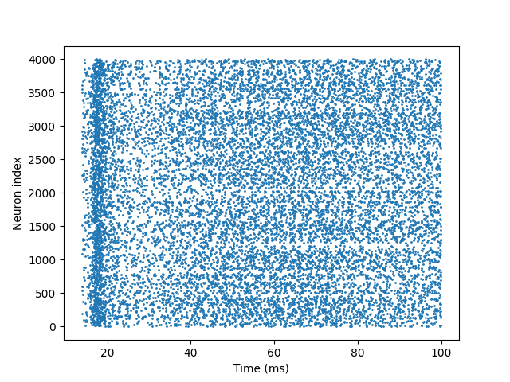

兴奋性-抑制性神经元网络（E-I网络）的模拟与分析#
本实例将基于 braincell 框架实现一个经典的兴奋-抑制神经元网络。通过构建由 Hodgkin-Huxley模型神经元组成的 E-I 网络，你将学习如何在 braincell 中实现从单神经元到网络的层级建模，并分析网络的 spike 动态特性。
准备工作#
首先确保已安装必要的库（braincell、brainstate、brainunit、matplotlib），并导入所需模块：
import brainunit as u
import matplotlib.pyplot as plt
import brainstate
import braincell
代码详解#
参数定义#
首先定义关键物理参数，这些参数决定了神经元的电生理特性和网络规模：
# 神经元动作电位发放阈值
V_th = -20. * u.mV
# 神经元膜面积
area = 20000 * u.um **2
area = area.in_unit(u.cm** 2)
# 膜电容
Cm = (1 * u.uF * u.cm ** -2) * area # 总电容 = 比电容 × 面积
定义 HH 单神经元模型#
使用 SingleCompartment 构建基于 HH 模型的单神经元，包含钠通道 INa 、钾通道 IK 和漏电流 IL ，这些通道共同决定神经元的放电特性：
class HH(braincell.SingleCompartment):
def __init__(self, in_size):
# 初始化单房室神经元
super().__init__(in_size, C=Cm, solver='ind_exp_euler')
# 钠离子通道（INa）
self.na = braincell.ion.SodiumFixed(in_size, E=50. * u.mV)
self.na.add_elem(
# 最大电导
INa=braincell.channel.INa_TM1991(in_size, g_max=(100. * u.mS * u.cm **-2) * area, V_sh=-63. * u.mV)
)
# 钾离子通道（IK）
self.k = braincell.ion.PotassiumFixed(in_size, E=-90 * u.mV)
self.k.add_elem(
# 最大电导
IK=braincell.channel.IK_TM1991(in_size, g_max=(30. * u.mS * u.cm** -2) * area, V_sh=-63. * u.mV)
)
# 漏电流（IL）
self.IL = braincell.channel.IL(
in_size,
E=-60. * u.mV,
g_max=(5. * u.nS * u.cm **-2) * area # 最大电导
)
---------------------------------------------------------------------------
TypeError Traceback (most recent call last)
Cell In[36], line 96
90 spikes = brainstate.compile.for_loop(
91 net.update, times,
92 pbar=brainstate.compile.ProgressBar(10) # 显示进度条
93 )
95 # 提取 spike 发生的时间和神经元索引
---> 96 t_indices, n_indices = u.math.where(spikes)
98 # 绘制 raster plot
99 plt.scatter(times[t_indices], n_indices, s=1)
File D:\Document\PyCharm\Project\braincell\.venv\Lib\site-packages\saiunit\math\_fun_keep_unit.py:3294, in where(condition, x, y, size, fill_value)
3292 if x is None and y is None:
3293 assert not isinstance(fill_value, Quantity), "fill_value should not be a Quantity."
-> 3294 return jnp.where(condition, size=size, fill_value=fill_value)
3296 assert size is None and fill_value is None, "size and fill_value are only supported when x and y are not None."
3297 if isinstance(x, Quantity) and isinstance(y, Quantity):
File D:\Document\PyCharm\Project\braincell\.venv\Lib\site-packages\jax\_src\numpy\lax_numpy.py:2810, in where(condition, x, y, size, fill_value)
2750 """Select elements from two arrays based on a condition.
2751
2752 JAX implementation of :func:`numpy.where`.
(...) 2807 Array([0, 0, 0, 0, 0, 5, 6, 7, 8, 9], dtype=int32)
2808 """
2809 if x is None and y is None:
-> 2810 util.check_arraylike("where", condition)
2811 return nonzero(condition, size=size, fill_value=fill_value)
2812 else:
File D:\Document\PyCharm\Project\braincell\.venv\Lib\site-packages\jax\_src\numpy\util.py:181, in check_arraylike(fun_name, emit_warning, stacklevel, *args)
178 warnings.warn(msg + " In a future JAX release this will be an error.",
179 category=DeprecationWarning, stacklevel=stacklevel)
180 else:
--> 181 raise TypeError(msg.format(fun_name, type(arg), pos))
TypeError: where requires ndarray or scalar arguments, got <class 'NoneType'> at position 0.
定义 E-I 网络：兴奋性与抑制性神经元的连接#
构建由兴奋性（E）和抑制性（I）神经元组成的网络，模拟皮层网络中常见的 E-I 平衡机制：
class EINet(brainstate.nn.DynamicsGroup):
def __init__(self):
super().__init__()
# 网络规模
self.n_exc = 3200
self.n_inh = 800
self.num = self.n_exc + self.n_inh # 总神经元数：4000
# 初始化神经元群体
self.N = HH(self.num)
# 兴奋性突触投射
self.E = brainstate.nn.AlignPostProj(
# 连接规则
comm=brainstate.nn.EventFixedProb(
self.n_exc, self.num, conn_num=0.02, # 连接概率
conn_weight=6. * u.nS # 突触权重
),
# 突触动力学
syn=brainstate.nn.Expon(self.num, tau=5. * u.ms),
# 突触后效应
out=brainstate.nn.COBA(E=0. * u.mV),
post=self.N # 投射目标为神经元群体 N
)
# 抑制性突触投射
self.I = brainstate.nn.AlignPostProj(
# 连接规则
comm=brainstate.nn.EventFixedProb(
self.n_inh, self.num, conn_num=0.02,
conn_weight=67. * u.nS
),
# 突触动力学
syn=brainstate.nn.Expon(self.num, tau=10. * u.ms),
# 突触后效应
out=brainstate.nn.COBA(E=-80. * u.mV),
post=self.N # 投射目标为神经元群体 N
)
def update(self, t):
# 定义网络随时间的更新规则
with brainstate.environ.context(t=t):
# 获取当前时刻的 spike 信号
spk = self.N.spike.value
# 兴奋性神经元的 spike 驱动兴奋性突触投射
self.E(spk[:self.n_exc])
# 抑制性神经元的 spike 驱动抑制性突触投射
self.I(spk[self.n_exc:])
# 神经元接收突触输入后更新状态，返回新的 spike 信号
spk = self.N(0. * u.nA)
运行网络模拟#
初始化网络并运行仿真，记录每个时刻的神经元 spike 活动：
# 初始化 E-I 网络
net = EINet()
brainstate.nn.init_all_states(net) # 初始化网络中所有神经元和突触的状态
# 设置仿真参数并运行
with brainstate.environ.context(dt=0.1 * u.ms): # 时间步长
# 生成仿真时间序列
times = u.math.arange(0. * u.ms, 100. * u.ms, brainstate.environ.get_dt())
# 循环更新网络状态
spikes = brainstate.compile.for_loop(
net.update, times,
pbar=brainstate.compile.ProgressBar(10) # 显示进度条
)
可视化网络 spike 活动#
将 spike 数据绘制成格栅图，直观展示神经元在时间上的发放模式：
# 提取 spike 发生的时间和神经元索引
t_indices, n_indices = u.math.where(spikes)
# 绘制 raster plot
plt.scatter(times[t_indices], n_indices, s=1)
plt.xlabel('Time (ms)') # 横轴：时间
plt.ylabel('Neuron index') # 纵轴：神经元索引
plt.show()
# 此例程在jupyter中打断后没法完成可视化，暂时先将运行结果保留！
结果解读#
运行代码后，你将看到一张格栅图，如下图：

其中每个点代表一个神经元在特定时间的 spike 发放。典型的 E-I 网络动态具有以下特征：
异步发放：神经元发放时间分散，无明显同步节律。
稀疏活动：大多数神经元在 100 ms 内发放次数较少。
无爆发式同步：由于抑制性突触的快速反馈，避免了大规模神经元同步爆发。
这些特征表明 E-I 网络通过兴奋性和抑制性的动态平衡，维持了稳定且符合生理特性的活动模式。
扩展练习#
调整抑制性突触权重，观察网络是否出现过度同步，即爆发式活动。
增加兴奋性神经元比例，分析 E-I 失衡对网络动态的影响。
延长仿真时间，观察网络是否维持稳定的异步活动。
通过这些扩展，你可以深入理解 E-I 平衡在维持神经网络功能中的核心作用，以及 braincell 在复杂网络建模中的灵活性。